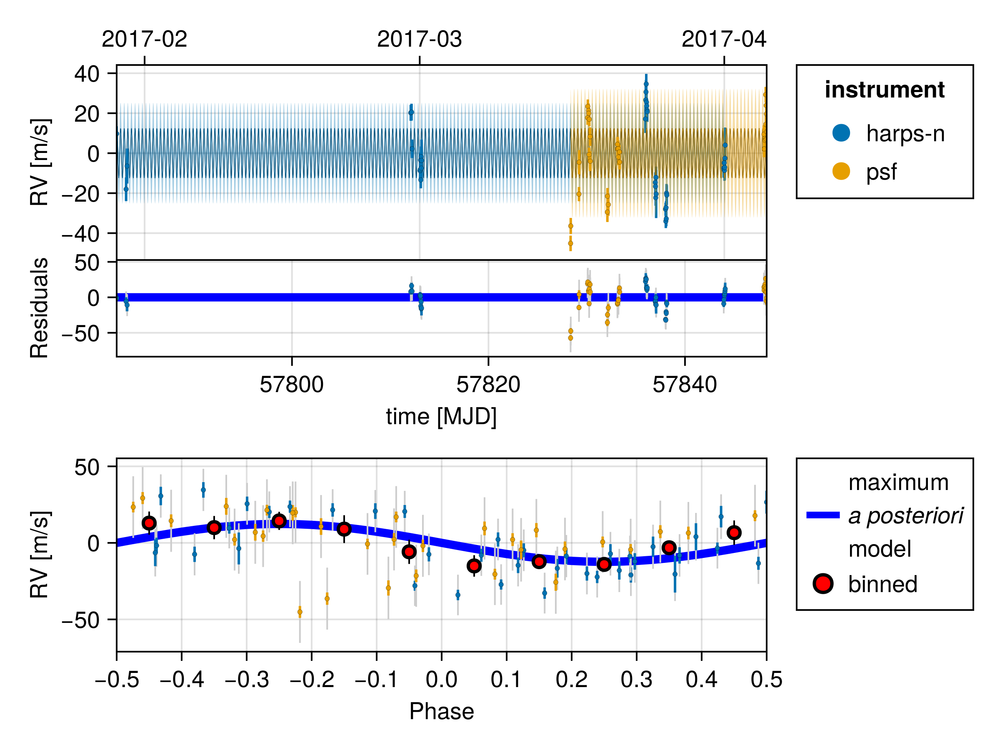
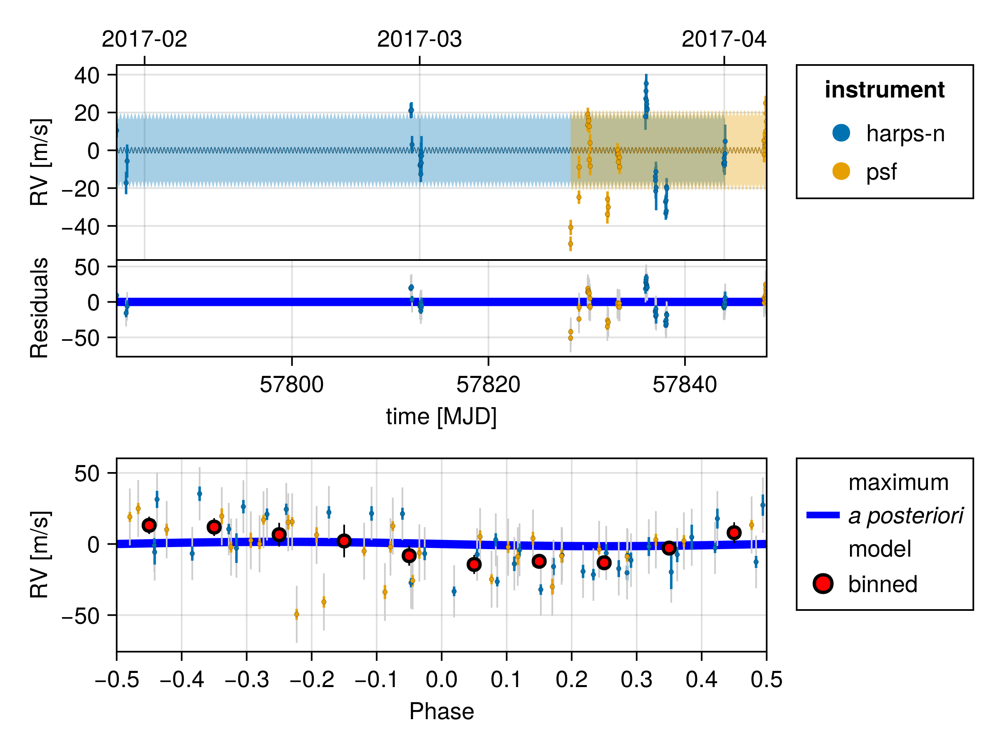
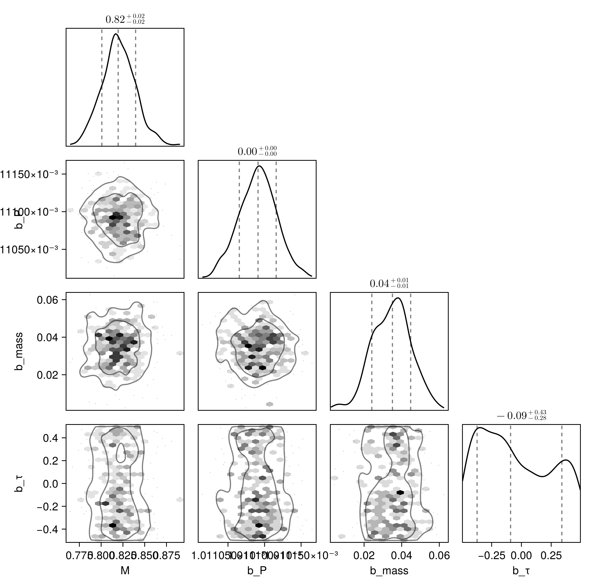
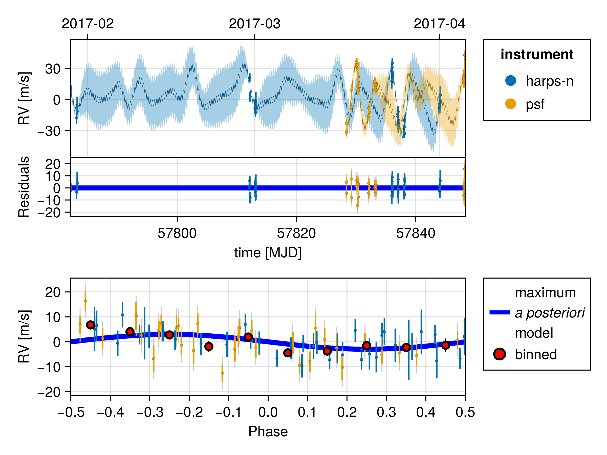

Fit Radial Velocity
You can use Octofitter to fit radial velocity data, either alone or in combination with other kinds of data. Multiple instruments (up to 10) are supported, as are gaussian processes to model stellar activity..
Radial velocity modelling is supported in Octofitter via the extension package OctofitterRadialVelocity. To install it, run pkg> add OctofitterRadialVelocity
For this example, we will fit the orbit of the planet K2-131 to perform the same fit as in the RadVel Gaussian Process Fitting tutorial.
We will use the following packages:
using Octofitter
using OctofitterRadialVelocity
using PlanetOrbits
using CairoMakie
using PairPlots
using CSV
using DataFrames
using DistributionsWe will start by downloading and preparing a table of radial velocity measurements, and create a StarAbsoluteRVLikelihood object to hold them.
The following functions allow you to directly load data from various public RV databases:
HARPS_DR1_rvs("star-name")HARPS_RVBank_observations("star-name")Lick_rvs("star-name")HIRES_rvs("star-name")
Basic Fit
Start by fitting a 1-planet Keplerian model.
Calling those functions with the name of a star will return a StarAbsoluteRVLikelihood table. For this example, to replicate the results of RadVel, we will download their example data for K2-131 and format it for Octofitter:
rv_file = download("https://raw.githubusercontent.com/California-Planet-Search/radvel/master/example_data/k2-131.txt")
rv_dat_raw = CSV.read(rv_file, DataFrame, delim=' ')
rv_dat = DataFrame();
rv_dat.epoch = jd2mjd.(rv_dat_raw.time)
rv_dat.rv = rv_dat_raw.mnvel
rv_dat.σ_rv = rv_dat_raw.errvel
tels = sort(unique(rv_dat_raw.tel))
rv_dat.inst_idx = map(rv_dat_raw.tel) do tel
findfirst(==(tel), tels)
end
rvlike = StarAbsoluteRVLikelihood(
rv_dat,
instrument_names=["harps-n", "psf"],
)StarAbsoluteRVLikelihood Table with 4 columns and 70×1 rows:
epoch rv σ_rv inst_idx
┌───────────────────────────────────
1,1 │ 57782.2 -6682.78 3.71 1
2,1 │ 57783.1 -6710.55 5.95 1
3,1 │ 57783.2 -6698.96 8.76 1
4,1 │ 57812.1 -6672.32 4.0 1
5,1 │ 57812.2 -6672.0 4.22 1
6,1 │ 57812.2 -6690.31 4.63 1
7,1 │ 57813.0 -6701.27 4.12 1
8,1 │ 57813.1 -6700.71 5.34 1
9,1 │ 57813.1 -6695.97 3.67 1
10,1 │ 57813.1 -6705.87 4.23 1
11,1 │ 57813.1 -6694.27 5.12 1
12,1 │ 57813.2 -6699.99 5.0 1
13,1 │ 57813.2 -6696.17 10.43 1
14,1 │ 57836.0 -6675.4 7.03 1
15,1 │ 57836.0 -6665.92 7.48 1
16,1 │ 57836.0 -6661.9 6.03 1
17,1 │ 57836.1 -6657.92 5.08 1
⋮ │ ⋮ ⋮ ⋮ ⋮Now, create a planet. We can use the RadialVelocityOrbit type from PlanetOrbits.jl that requires fewer parameters (eg no inclination or longitude of ascending node). We could instead use a Visual{KepOrbit} or similar if we wanted to include these parameters and visualize the orbit in the plane of the sky.
@planet b RadialVelocityOrbit begin
e = 0
ω = 0.0
# To match RadVel, we set a prior on Period and calculate semi-major axis from it
P ~ truncated(Normal(0.3693038/365.25, 0.0000091/365.25),lower=0.00001)
a = cbrt(system.M * b.P^2) # note the equals sign.
τ ~ UniformCircular(1.0)
tp = b.τ*b.P + 57782 # reference epoch for τ. Choose an MJD date near your data.
mass ~ LogUniform(0.001, 10)
end
@system k2_132 begin
M ~ truncated(Normal(0.82, 0.02),lower=0) # (Baines & Armstrong 2011).
# HARPS-N
rv0_1 ~ Normal(0,10000)
jitter_1 ~ LogUniform(0.01,100)
# FPS
rv0_2 ~ Normal(0,10000)
jitter_2 ~ LogUniform(0.01,100)
end rvlike bSystem model k2_132
Derived:
Priors:
M Truncated(Distributions.Normal{Float64}(μ=0.82, σ=0.02); lower=0.0)
rv0_1 Distributions.Normal{Float64}(μ=0.0, σ=10000.0)
jitter_1 Distributions.LogUniform{Float64}(a=0.01, b=100.0)
rv0_2 Distributions.Normal{Float64}(μ=0.0, σ=10000.0)
jitter_2 Distributions.LogUniform{Float64}(a=0.01, b=100.0)
Planet b
Derived:
e, ω, a, τ, tp,
Priors:
P Truncated(Distributions.Normal{Float64}(μ=0.001011098699520876, σ=2.491444216290212e-8); lower=1.0e-5)
τy Distributions.Normal{Float64}(μ=0.0, σ=1.0)
τx Distributions.Normal{Float64}(μ=0.0, σ=1.0)
mass Distributions.LogUniform{Float64}(a=0.001, b=10.0)
Octofitter.UnitLengthPrior{:τy, :τx}: √(τy^2+τx^2) ~ LogNormal(log(1), 0.02)
StarAbsoluteRVLikelihood Table with 4 columns and 70×1 rows:
epoch rv σ_rv inst_idx
┌───────────────────────────────────
1,1 │ 57782.2 -6682.78 3.71 1
2,1 │ 57783.1 -6710.55 5.95 1
3,1 │ 57783.2 -6698.96 8.76 1
4,1 │ 57812.1 -6672.32 4.0 1
5,1 │ 57812.2 -6672.0 4.22 1
6,1 │ 57812.2 -6690.31 4.63 1
7,1 │ 57813.0 -6701.27 4.12 1
8,1 │ 57813.1 -6700.71 5.34 1
9,1 │ 57813.1 -6695.97 3.67 1
10,1 │ 57813.1 -6705.87 4.23 1
11,1 │ 57813.1 -6694.27 5.12 1
12,1 │ 57813.2 -6699.99 5.0 1
13,1 │ 57813.2 -6696.17 10.43 1
14,1 │ 57836.0 -6675.4 7.03 1
15,1 │ 57836.0 -6665.92 7.48 1
16,1 │ 57836.0 -6661.9 6.03 1
17,1 │ 57836.1 -6657.92 5.08 1
⋮ │ ⋮ ⋮ ⋮ ⋮
Note how the rvlike object was attached to the k2_132 system instead of the planet. This is because the observed radial velocity is of the star, and is caused by any/all orbitting planets.
The rv0 and jitter parameters specify priors for the instrument-specific offset and white noise jitter standard deviation. The _i index matches the inst_idx used to create the observation table.
Note also here that the mass variable is really msini, or the minimum mass of the planet.
We can now prepare our model for sampling.
model = Octofitter.LogDensityModel(k2_132; autodiff=:ForwardDiff)LogDensityModel for System k2_132 of dimension 9 with fields .ℓπcallback and .∇ℓπcallback
Sample:
using Random
rng = Random.Xoshiro(0)
chain = octofit(
rng, model, 0.8,
adaptation = 500,
iterations = 500,
verbosity = 4,
max_depth = 12,
initial_samples=50000,
)Chains MCMC chain (500×27×1 Array{Float64, 3}):
Iterations = 1:1:500
Number of chains = 1
Samples per chain = 500
Wall duration = 22.24 seconds
Compute duration = 22.24 seconds
parameters = M, rv0_1, jitter_1, rv0_2, jitter_2, b_P, b_τy, b_τx, b_mass, b_e, b_ω, b_a, b_τ, b_tp
internals = n_steps, is_accept, acceptance_rate, hamiltonian_energy, hamiltonian_energy_error, max_hamiltonian_energy_error, tree_depth, numerical_error, step_size, nom_step_size, is_adapt, loglike, logpost, tree_depth, numerical_error
Summary Statistics
parameters mean std mcse ess_bulk ess_tail rhat ⋯
Symbol Float64 Float64 Float64 Float64 Float64 Float64 ⋯
M 0.8203 0.0197 0.0009 442.2672 352.3842 1.0023 ⋯
rv0_1 6693.2744 2.3011 0.1212 363.9162 297.7144 1.0055 ⋯
jitter_1 14.3205 2.0967 0.1062 391.1891 249.1879 0.9986 ⋯
rv0_2 0.1426 3.9720 0.1965 421.8123 313.4341 1.0037 ⋯
jitter_2 19.7501 3.1972 0.2298 270.5424 167.3481 0.9997 ⋯
b_P 0.0010 0.0000 0.0000 501.0729 302.8591 1.0292 ⋯
b_τy -0.0881 0.7057 0.0538 194.5379 272.6094 1.0015 ⋯
b_τx -0.1277 0.6927 0.0565 156.2358 383.2258 1.0162 ⋯
b_mass 0.0346 0.0103 0.0006 275.0929 191.7740 1.0110 ⋯
b_e 0.0000 0.0000 NaN NaN NaN NaN ⋯
b_ω 0.0000 0.0000 NaN NaN NaN NaN ⋯
b_a 0.0094 0.0001 0.0000 441.8219 352.3842 1.0023 ⋯
b_τ -0.0396 0.3017 0.0220 226.5464 349.8738 1.0154 ⋯
b_tp 57782.0000 0.0003 0.0000 226.5464 349.8738 1.0154 ⋯
1 column omitted
Quantiles
parameters 2.5% 25.0% 50.0% 75.0% 97.5%
Symbol Float64 Float64 Float64 Float64 Float64
M 0.7840 0.8079 0.8195 0.8325 0.8626
rv0_1 6689.0441 6691.7582 6693.1559 6694.7557 6698.5635
jitter_1 10.6507 12.9514 14.0645 15.5558 18.8389
rv0_2 -7.4686 -2.4553 0.2187 2.9170 7.5774
jitter_2 14.7884 17.5403 19.2616 21.5518 26.5301
b_P 0.0010 0.0010 0.0010 0.0010 0.0010
b_τy -0.9942 -0.7786 -0.1724 0.6148 0.9933
b_τx -1.0035 -0.7873 -0.2991 0.5220 0.9950
b_mass 0.0147 0.0271 0.0351 0.0413 0.0541
b_e 0.0000 0.0000 0.0000 0.0000 0.0000
b_ω 0.0000 0.0000 0.0000 0.0000 0.0000
b_a 0.0093 0.0094 0.0094 0.0095 0.0096
b_τ -0.4739 -0.3071 -0.0909 0.2358 0.4774
b_tp 57781.9995 57781.9997 57781.9999 57782.0002 57782.0005
Excellent! Let's plot the maximum likelihood orbit:
fig = OctofitterRadialVelocity.rvpostplot(model, chain)
We can also plot the orbit from a given sample. Making an animation of random orbits drawn from the chain is a good way to visualize the uncertainty.
fig = OctofitterRadialVelocity.rvpostplot(model, chain, 253)
Create a corner plot:
using PairPlots
pairplot(chain[:,[:M, :b_mass, :b_P, :b_τ],1])
Gaussian Process Fit
Let us now add a Gaussian process to model stellar activity. This should improve the fit.
We start by writing a functino that creates a Gaussian process kernel from a set of system parameters. We will create a quasi-periodic kernel.
using AbstractGPs
function gauss_proc_quasi_periodic(θ_system)
# θ_system is a named tuple of variable values for this posterior draw.
η₁ = θ_system.gp_η₁ # h
η₂ = θ_system.gp_η₂ # λ
η₃ = θ_system.gp_η₃ # θ
η₄ = θ_system.gp_η₄ # ω
kernel = η₁^2 *
(SqExponentialKernel() ∘ ScaleTransform(1/(η₂))) *
(PeriodicKernel(r=[η₄]) ∘ ScaleTransform(1/(η₃)))
gp = GP(kernel)
return gp
endgauss_proc_quasi_periodic (generic function with 1 method)Now provide this function when we construct our likelihood object:
rvlike = StarAbsoluteRVLikelihood(rv_dat,
instrument_names=["harps-n", "psf"],
gaussian_process = gauss_proc_quasi_periodic
)StarAbsoluteRVLikelihood Table with 4 columns and 70×1 rows:
epoch rv σ_rv inst_idx
┌───────────────────────────────────
1,1 │ 57782.2 -6682.78 3.71 1
2,1 │ 57783.1 -6710.55 5.95 1
3,1 │ 57783.2 -6698.96 8.76 1
4,1 │ 57812.1 -6672.32 4.0 1
5,1 │ 57812.2 -6672.0 4.22 1
6,1 │ 57812.2 -6690.31 4.63 1
7,1 │ 57813.0 -6701.27 4.12 1
8,1 │ 57813.1 -6700.71 5.34 1
9,1 │ 57813.1 -6695.97 3.67 1
10,1 │ 57813.1 -6705.87 4.23 1
11,1 │ 57813.1 -6694.27 5.12 1
12,1 │ 57813.2 -6699.99 5.0 1
13,1 │ 57813.2 -6696.17 10.43 1
14,1 │ 57836.0 -6675.4 7.03 1
15,1 │ 57836.0 -6665.92 7.48 1
16,1 │ 57836.0 -6661.9 6.03 1
17,1 │ 57836.1 -6657.92 5.08 1
⋮ │ ⋮ ⋮ ⋮ ⋮We create a new system model with added parameters gp_η₁ etc for the Gaussian process fit.
gp_explength_mean = 9.5*sqrt(2.) # sqrt(2)*tau in Dai+ 2017 [days]
gp_explength_unc = 1.0*sqrt(2.)
gp_perlength_mean = sqrt(1. /(2. *3.32)) # sqrt(1/(2*gamma)) in Dai+ 2017
gp_perlength_unc = 0.019
gp_per_mean = 9.64 # T_bar in Dai+ 2017 [days]
gp_per_unc = 0.12
# No change to planet model
@planet b RadialVelocityOrbit begin
e = 0
ω = 0.0
P ~ truncated(Normal(0.3693038/365.25, 0.0000091/365.25),lower=0.00001)
a = cbrt(system.M * b.P^2)
mass ~ LogUniform(0.001, 10)
τ ~ UniformCircular(1.0)
tp = b.τ*b.P + 57782 # reference epoch for τ. Choose an MJD date near your data.
end
@system k2_132 begin
M ~ truncated(Normal(0.82, 0.02),lower=0) # (Baines & Armstrong 2011).
# HARPS-N
rv0_1 ~ Normal(0,10000)
jitter_1 ~ LogUniform(0.01,10)
# FPS
rv0_2 ~ Normal(0,10000)
jitter_2 ~ LogUniform(0.01,10)
# Add priors on GP kernel hyper-parameters.
gp_η₁ ~ truncated(Normal(25,10),lower=0)
gp_η₂ ~ truncated(Normal(gp_explength_mean,gp_explength_unc),lower=0)
gp_η₃ ~ truncated(Normal(gp_per_mean,1),lower=0)
gp_η₄ ~ truncated(Normal(gp_perlength_mean,gp_perlength_unc),lower=0)
end rvlike b
model = Octofitter.LogDensityModel(k2_132; autodiff=:ForwardDiff)LogDensityModel for System k2_132 of dimension 13 with fields .ℓπcallback and .∇ℓπcallback
Sample from the model as before:
using Random
rng = Random.Xoshiro(0)
chain = octofit(
rng, model, 0.8,
adaptation = 100,
iterations = 100,
verbosity = 4,
max_depth = 12,
initial_samples=50000,
pathfinder=false
)Chains MCMC chain (100×31×1 Array{Float64, 3}):
Iterations = 1:1:100
Number of chains = 1
Samples per chain = 100
Wall duration = 494.58 seconds
Compute duration = 494.58 seconds
parameters = M, rv0_1, jitter_1, rv0_2, jitter_2, gp_η₁, gp_η₂, gp_η₃, gp_η₄, b_P, b_mass, b_τy, b_τx, b_e, b_ω, b_a, b_τ, b_tp
internals = n_steps, is_accept, acceptance_rate, hamiltonian_energy, hamiltonian_energy_error, max_hamiltonian_energy_error, tree_depth, numerical_error, step_size, nom_step_size, is_adapt, loglike, logpost, tree_depth, numerical_error
Summary Statistics
parameters mean std mcse ess_bulk ess_tail rhat ⋯
Symbol Float64 Float64 Float64 Float64 Float64 Float64 ⋯
M 0.8173 0.0159 0.0021 60.9814 42.4389 0.9900 ⋯
rv0_1 6690.2852 15.8468 1.9080 65.7160 78.3393 1.0166 ⋯
jitter_1 0.5564 0.8164 0.1004 44.1622 56.8419 1.0305 ⋯
rv0_2 9.9630 20.9117 2.0107 55.8183 78.3393 1.0282 ⋯
jitter_2 5.9631 1.4256 0.1721 69.9667 48.4075 1.0194 ⋯
gp_η₁ 29.2679 5.5680 0.6430 72.3491 58.9391 1.0179 ⋯
gp_η₂ 13.3732 1.5537 0.2328 44.7697 58.9391 1.0191 ⋯
gp_η₃ 9.5751 0.7175 0.1059 53.8876 44.5810 0.9929 ⋯
gp_η₄ 0.3781 0.0160 0.0019 67.7898 31.5355 1.0170 ⋯
b_P 0.0010 0.0000 0.0000 62.6759 52.6712 1.0240 ⋯
b_mass 0.0102 0.0043 0.0004 99.4969 56.8419 0.9996 ⋯
b_τy 0.0676 0.7346 0.1391 34.6886 76.6284 0.9972 ⋯
b_τx -0.0168 0.6825 0.0966 57.5228 76.6284 1.0084 ⋯
b_e 0.0000 0.0000 NaN NaN NaN NaN ⋯
b_ω 0.0000 0.0000 NaN NaN NaN NaN ⋯
b_a 0.0094 0.0001 0.0000 61.0544 42.4389 0.9900 ⋯
b_τ -0.0300 0.2814 0.0332 80.7642 76.6284 0.9944 ⋯
b_tp 57782.0000 0.0003 0.0000 80.7642 76.6284 0.9944 ⋯
1 column omitted
Quantiles
parameters 2.5% 25.0% 50.0% 75.0% 97.5%
Symbol Float64 Float64 Float64 Float64 Float64
M 0.7859 0.8063 0.8172 0.8279 0.8526
rv0_1 6663.3757 6680.2026 6689.5739 6701.5553 6720.1945
jitter_1 0.0130 0.0595 0.1956 0.7278 2.6971
rv0_2 -20.6909 -2.1293 11.8895 22.8803 41.6533
jitter_2 3.3169 5.2320 5.9670 6.9215 8.5225
gp_η₁ 19.5457 25.4282 28.5192 32.4828 41.7357
gp_η₂ 10.5140 12.4241 13.4132 14.2997 16.4343
gp_η₃ 8.4188 9.1143 9.5220 9.9389 10.9845
gp_η₄ 0.3489 0.3665 0.3802 0.3884 0.4079
b_P 0.0010 0.0010 0.0010 0.0010 0.0010
b_mass 0.0027 0.0069 0.0103 0.0133 0.0183
b_τy -0.9928 -0.7599 0.2373 0.7457 1.0057
b_τx -0.9711 -0.6541 -0.0856 0.6038 0.9873
b_e 0.0000 0.0000 0.0000 0.0000 0.0000
b_ω 0.0000 0.0000 0.0000 0.0000 0.0000
b_a 0.0093 0.0094 0.0094 0.0095 0.0096
b_τ -0.4836 -0.2610 -0.0167 0.1886 0.4547
b_tp 57781.9995 57781.9997 57782.0000 57782.0002 57782.0005
For real data, we would want to increase the adaptation and iterations to at about 1000.
And plot:
fig = OctofitterRadialVelocity.rvpostplot(model, chain)